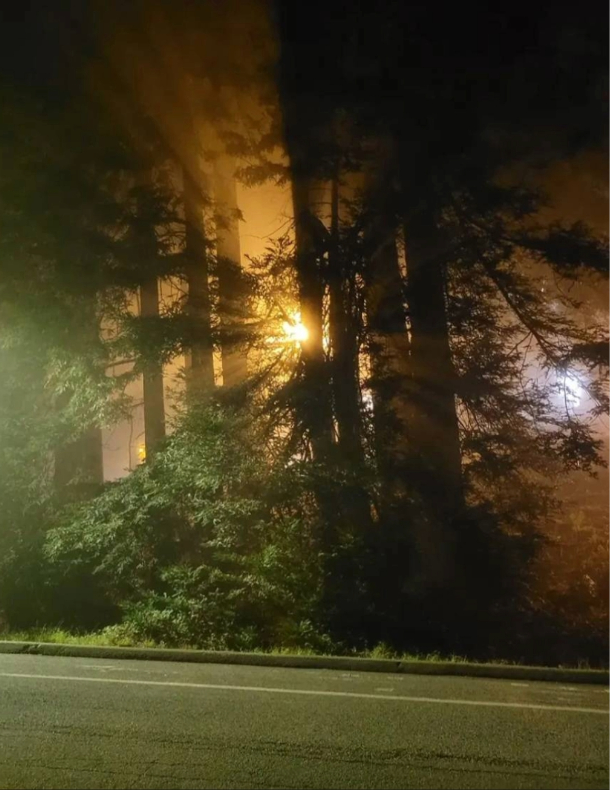
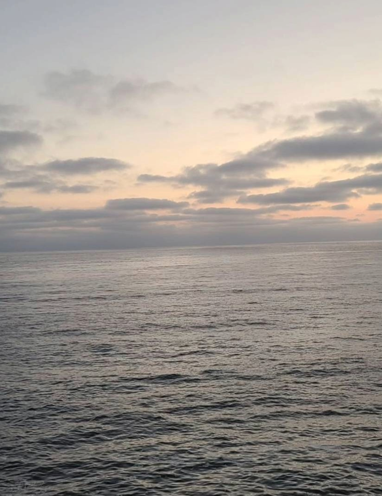
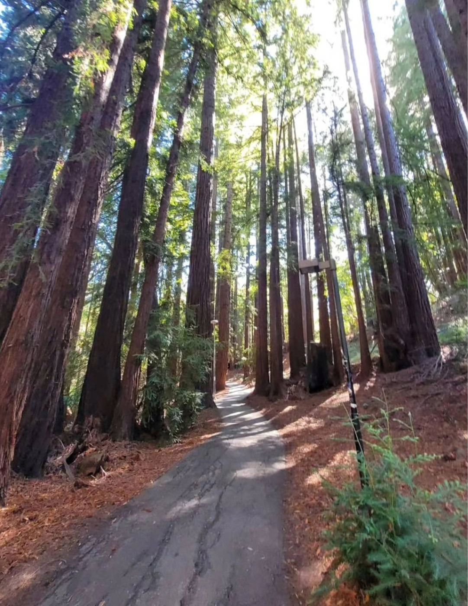
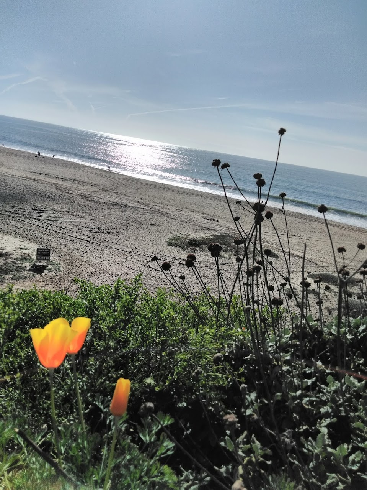
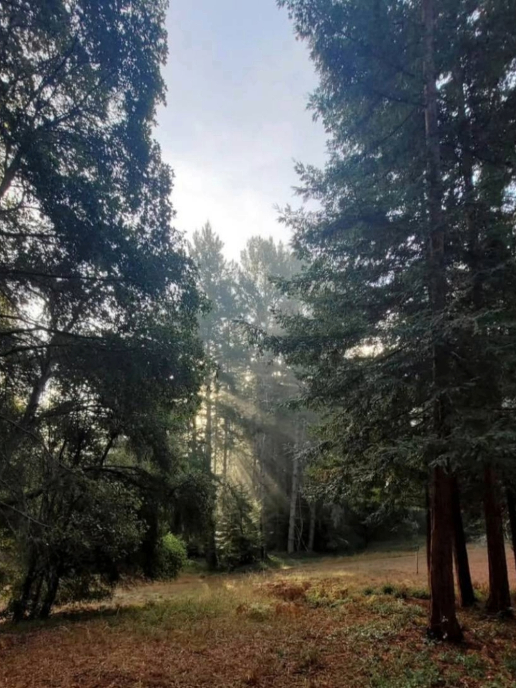
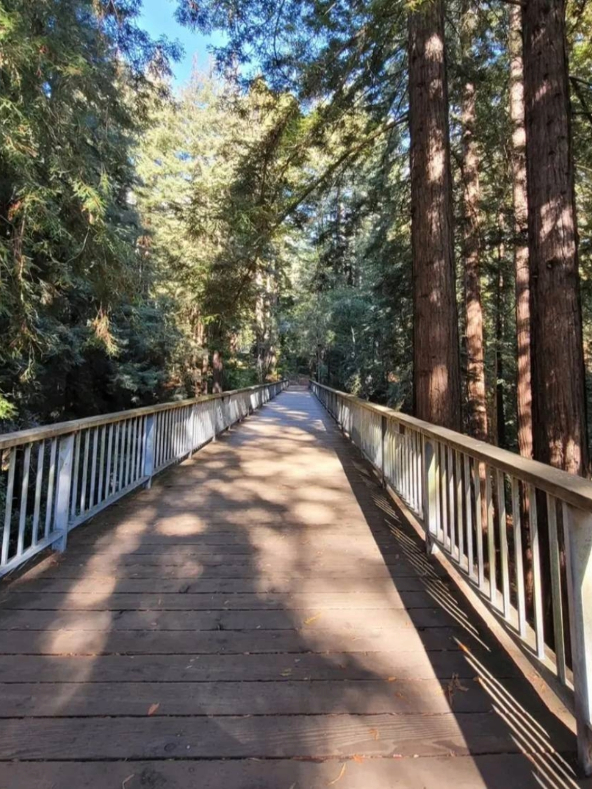

Who We Are
We, the owners of the Pacific Trails Resort, are a family who adore nature and the calmness that it brings. We love spending time in the outdoors exploring nature, hikes are a regular family activity that most times turn into camping. Our familial love for nature started a few generations back when our grandparents moved to the California coast. It was the first time our family had been near the ocean and the forest, and being able to visit both in the same day was a joy. From that point on, beach trips and hiking were the go to family outings that became tradition, eventually becoming engrained to the point we invested in a cabin to make the trips last longer. Because of the joy we felt in these trips, we wanted other friends and family to be able to share in our experiences causing us to invest into clearing areas for guests. After a few visits, we knew we had to expand and open up our home for others to explore and enjoy.
Our resort is taken care of by a mix of family members and trusted staff. We have a full kitchen crew to cater to prepare your breakfasts, picnics and snacks for your excursions. We also have a housekeeping crew to make sure every part of the Yurts are cleaned and prepared for the next guests stay. Due to the location of our beautiful retreat, we keep staff on hand to handle any issues that may arise with the little critters outside who may end up inside your yurt. Any issues you may have can be handled quickly with the front desk where you check in and is usually managed by a family member who will make sure everything is resolved quickly for your convenience!



About the Resort
The Pacific Resort Trails is a luxury nature retreat that strives to bring relaxation and calmness to all who visit. We take pride in our cleanliness and customer service and strive to provide a stellar experience that leaves customers thoroughly reconnected to nature. With trail maps provided, we encourage our customers to explore the surrounding lands and take in the views before returning to a heated pool and wine to relax. We are excited to welcome anyone who wishes to join us in nature whether its to use the trail maps, enjoy the yurts, or to follow our guided morning yoga.
We know camping is not everyone's favorite past time, so we built the resort as a perfect mix of modern utilities and camping chic. While the restroom and shower are located inside the main lodge, the Yurts do contain a sink with hot and cold water. There's also a queen-sized bed where you can lay while you look through the roof that can be opened.
We advise you bring a range of clothing to accommodate the changing weather as it varies from day to day and can drop temperature at night.



We look forward to hosting you at our beautiful resort and we can't wait to share the amazing ocean views and nature trails with you!